One good color matters less in a kitchen than how two colors work together.
Cabinets, walls, an island, and hardware all have to agree with each other, which makes pairing harder than picking a single shade ever is.
These seven combinations cover the range, from safe to genuinely bold.
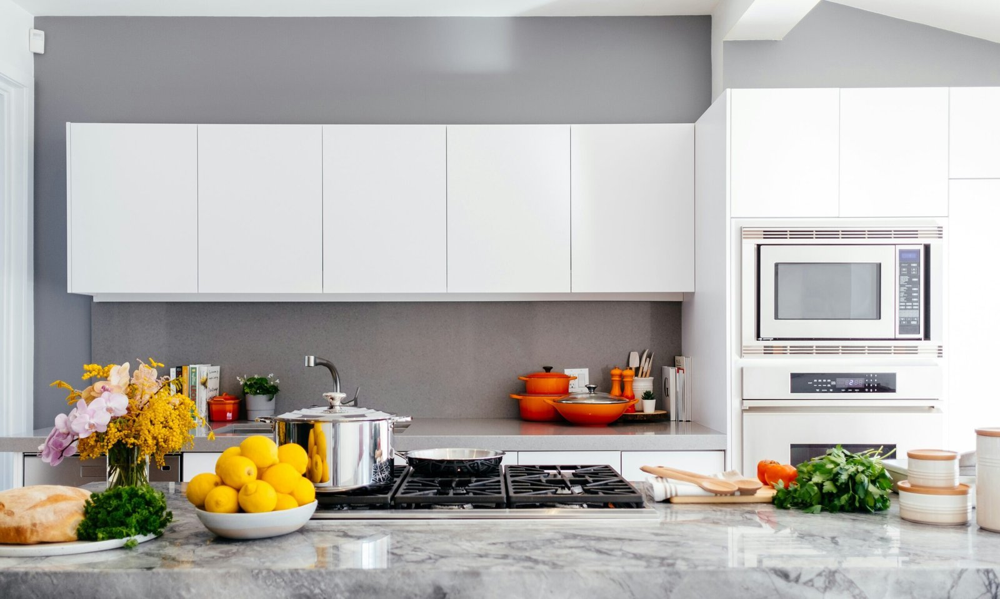

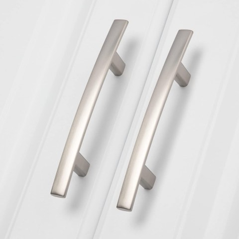
homdiy 20 Pack Brushed Nickel Cabinet Pulls, Solid Zinc Alloy, 3 Inch Hole Center
Shop on AmazonDo's and Don'ts of Mixing Kitchen Colors
Keeping one color dominant and the second as an accent, rather than splitting the room 50/50, generally reads as more intentional.
Testing both colors together under the kitchen's actual lighting matters more here than for a single color, since how two tones interact can shift considerably under warm versus cool light.
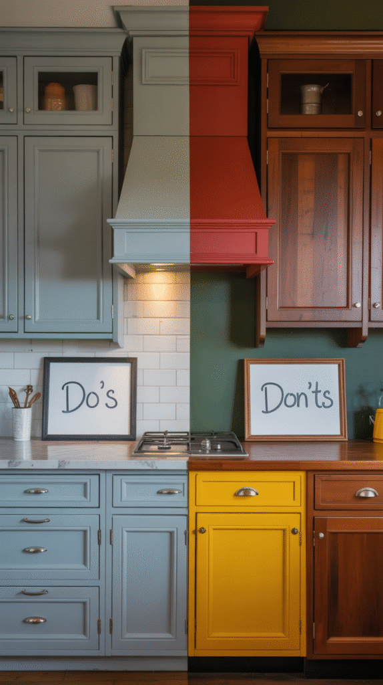
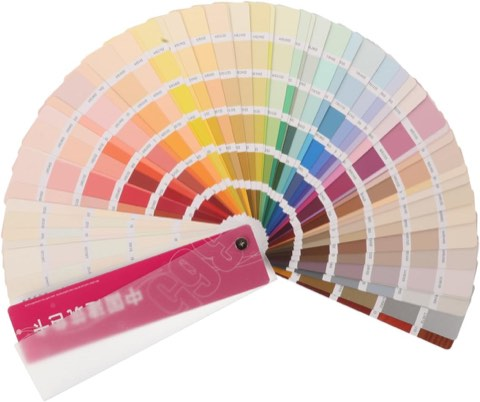
FAVOMOTO Standard Paint Sample Cards, 365 Colors, Wall Paint Chips Color Chart
Shop on Amazon
1. Black, White, and a Splash of Color
A black-and-white base with one additional bold accent color brings personality without committing to a full bold palette everywhere.
This approach also makes updating the accent color later far easier than repainting an entire two-tone scheme.
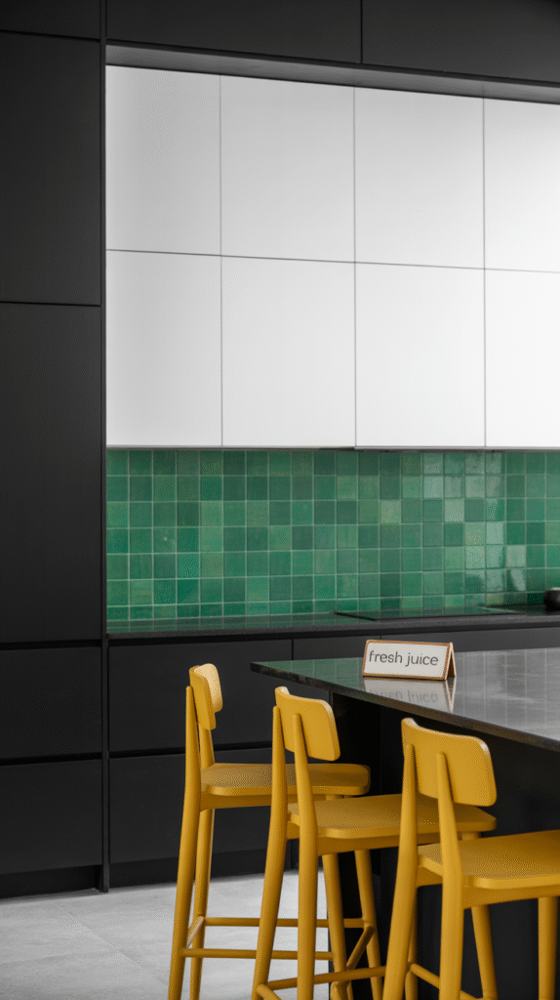
2. Greige and Black
A warm greige base paired with black accents brings understated sophistication without the starkness of pure gray and black together.
This combination tends to age well, since greige sits in a genuinely neutral middle ground that rarely feels dated.
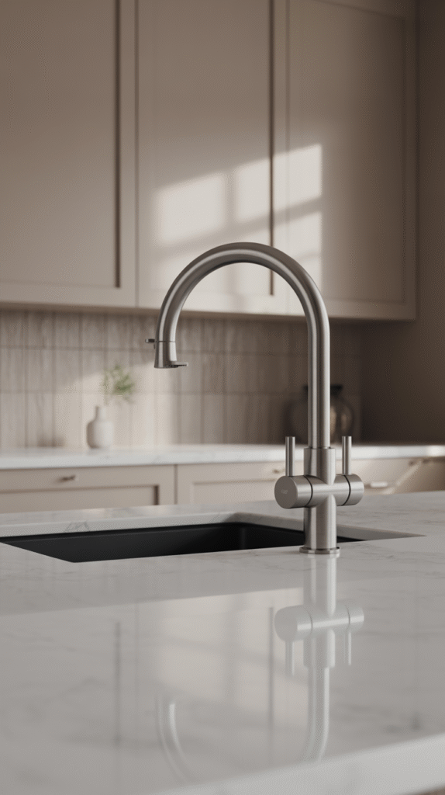
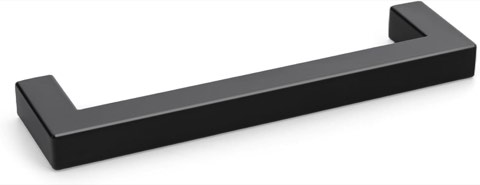
Goldenwarm 10 Pack 5 Inch Matte Black Cabinet Handles, Kitchen Drawer Pulls
Shop on Amazon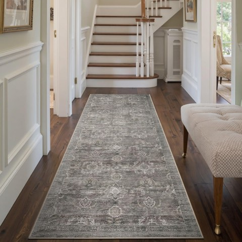
Rugxara 2 x 6 Washable Runner Rug, Taupe and Grey, for Hallway and Kitchen
Shop on Amazon3. Pale Blue and White
A pale, almost washed-out blue against crisp white brings a light, airy coastal quality that reads as effortless rather than themed.
This pairing works especially well in a kitchen with good natural light, which amplifies the combination's inherent brightness.
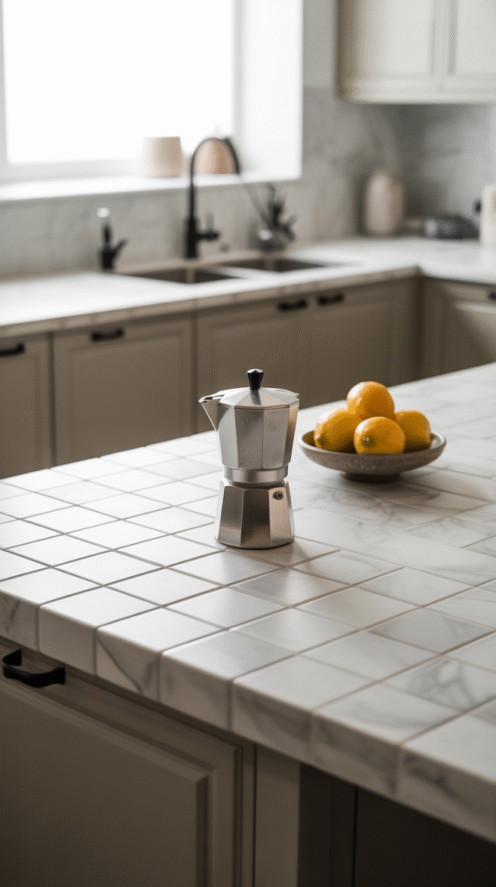
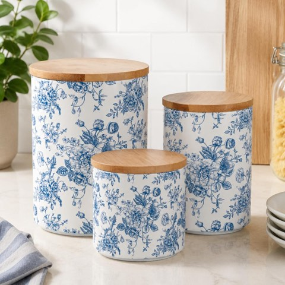
AnyDesign Chinoiserie Floral Ceramic Kitchen Canisters Set, Blue and White
Shop on Amazon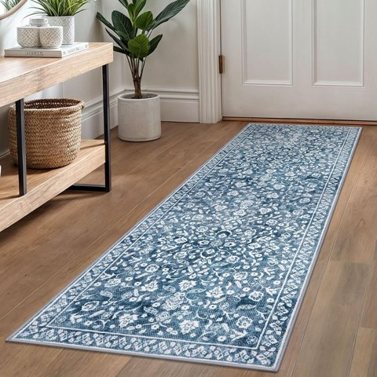
Washable Vintage Blue Runner Rug, 2 x 6 Ft, Non-Slip, for Hallway and Kitchen
Shop on Amazon4. Navy and Brass
Deep navy cabinetry against warm brass hardware brings real richness and a bold, moody sophistication.
This combination tends to work best on a single wall or island rather than every surface, letting the navy stay a statement instead of overwhelming the room.
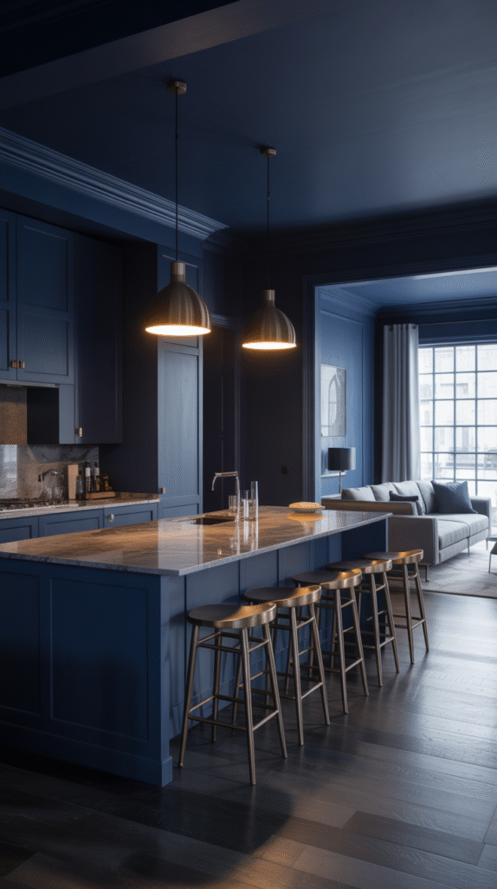
5. Sage Green and Cream
A soft sage paired with a warm cream brings genuine calm without tipping into anything cold or clinical.
This pairing suits a kitchen aiming for a softer, more relaxed feel rather than a sharp, high-contrast look.
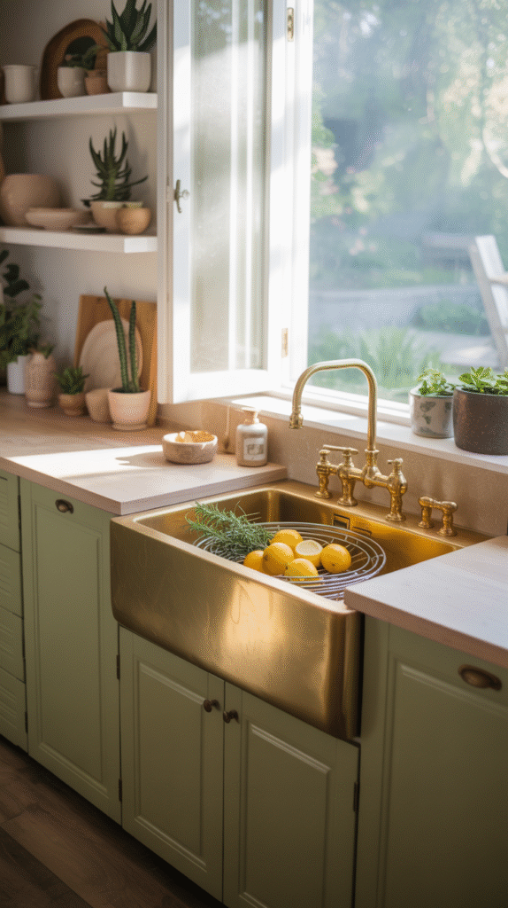
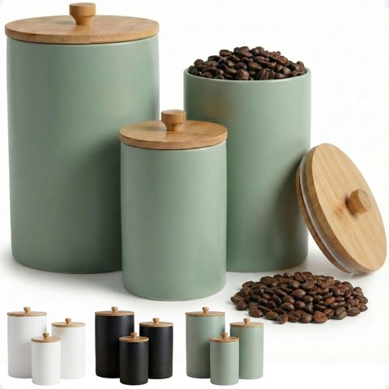
Ceramic Kitchen Canisters, Set of 3, Sage Green, with Airtight Bamboo Lids
Shop on Amazon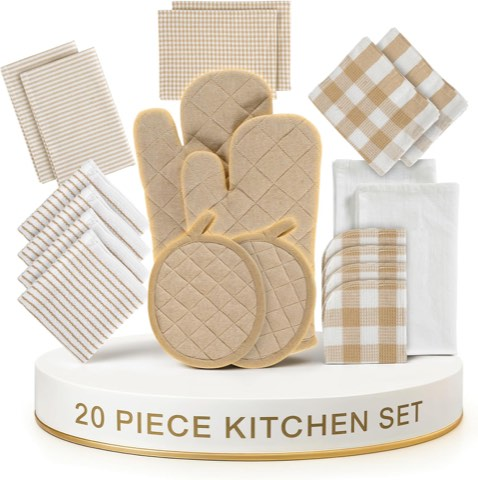
LANE LINEN 20 Piece Kitchen Linen Set, Absorbent Cotton Dish Towels and Mitts
Shop on Amazon6. Charcoal and Gold
Dark charcoal cabinetry paired with gold or brass hardware brings genuine drama and a modern, upscale edge.
This combination works best with enough natural light or layered lighting to keep the dark tone from reading as heavy or closed-in.
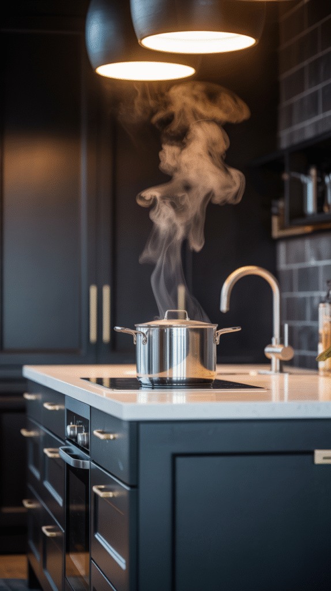
7. White and Wood
White cabinetry against natural wood tones, open shelving, a butcher block island, wood flooring, brings warmth to a palette that could otherwise feel sterile.
This pairing works in almost any kitchen size or layout, which is exactly why it is stayed a safe, reliable choice for so long.
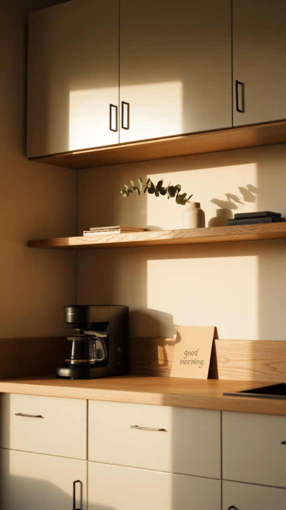
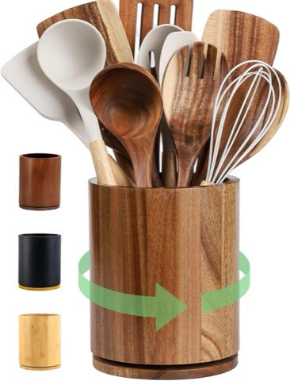
Acacia Wood Rotating Utensil Holder, 360 Degree, 7.3 Inch Kitchen Organizer
Shop on AmazonPick What Feels Right
None of these seven pairings is universally correct, the best one depends on the kitchen's light, size, and the mood that is actually wanted.
Whichever combination gets chosen in the end, the two colors working together end up mattering far more than either single one on its own.